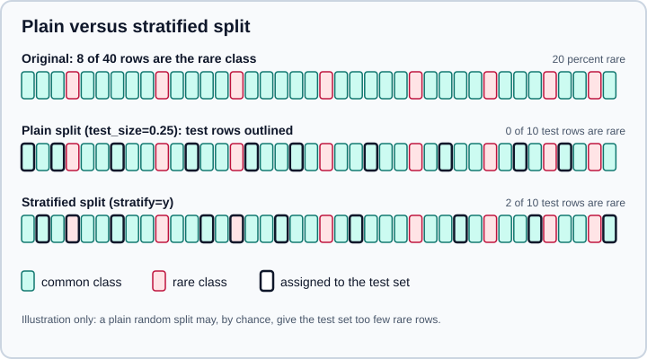

Train/Test Split
|
This content was generated with the assistance of AI and should be verified against the official documentation before being relied on in production. |
A model that is scored on the data it learned from tells you how well it memorised, not how well it will predict new
data. The simplest remedy is the holdout: set aside a fraction of the rows before training, fit on the rest, and score on
the held-out part exactly once. sklearn.model_selection.train_test_split does this in one call. This page documents it for
scikit-learn 1.9 (checked in October 2026 against 1.9.1, Python 3.13, NumPy 2.5.4 and pandas 3.1.0): every
parameter, the types it accepts and returns, how sizes are rounded, how to stratify, how to build a three-way split, and
the situations where a random row split is the wrong tool. Examples target Python 3.13 or 3.14 and were run on Python
3.13. Every example was run on those versions
and the printed output is real.
The concepts behind the split (training, validation and test sets, overfitting) are in Model Evaluation & Validation and Machine Learning Fundamentals. When data is scarce, or you want a stable estimate, use Cross-Validation & Splitters instead of (or after) a single split. Leakage, the main thing that goes wrong, has its own page: Common Pitfalls: Leakage & Randomness.
The signature
sklearn.model_selection.train_test_split(
*arrays, test_size=None, train_size=None, random_state=None, shuffle=True, stratify=None
)| Parameter | Meaning |
|---|---|
|
One or more indexable inputs with the same first dimension: lists, NumPy arrays, pandas Series and DataFrames, SciPy sparse matrices. All are split with the same row selection |
|
A float in (0.0, 1.0) is a proportion of the rows; an integer is an absolute number of rows; |
|
Same convention for the training part; |
|
Seeds the shuffle. An integer makes the split reproducible; |
|
|
|
An array-like of class labels, one per row, that the split should preserve; requires |
The function returns a list with two elements per input array, in the order train_0, test_0, train_1, test_1, ..., so
the usual call unpacks four values for (X, y). The keyword-only arguments cannot be passed by position (a rule scikit-learn
has enforced since 1.0).
The first split
import numpy as np
from sklearn.model_selection import train_test_split
X, y = np.arange(10).reshape((5, 2)), range(5)
X_train, X_test, y_train, y_test = train_test_split(X, y, test_size=0.33, random_state=42)
print(X_train.tolist(), y_train, X_test.tolist(), y_test)
print(train_test_split(list(range(5)), shuffle=False))[[4, 5], [0, 1], [6, 7]] [2, 0, 3] [[2, 3], [8, 9]] [1, 4] [[0, 1, 2], [3, 4]]
X and y were shuffled together: row [4, 5] is still paired with label 2. Without shuffling, the first three rows
train and the last two test. The y argument here is a range; the function accepts any indexable sequence, and a list in
gives lists out.
Sizes and rounding
A float test_size is converted to a number of rows by rounding up, and the training set takes the rest; a float
train_size is rounded down, and the test set takes the rest. This matters for tiny datasets and for exact reporting:
import numpy as np
from sklearn.datasets import load_iris
from sklearn.model_selection import train_test_split
iris = load_iris(as_frame=True)
Xf, yf = iris.data, iris.target
X_tr, X_te, y_tr, y_te = train_test_split(Xf, yf, test_size=0.2, random_state=0)
print(type(X_tr).__name__, X_tr.shape, X_te.shape, "index kept:", X_te.index[:5].tolist())
print("default test_size on 150 rows:", len(train_test_split(Xf)[1]))
print("rounding: test_size=0.33 on 10 rows ->", len(train_test_split(np.arange(10), test_size=0.33)[1]), "test;",
"train_size=0.5 only ->", [len(a) for a in train_test_split(np.arange(11), train_size=0.5)])DataFrame (120, 4) (30, 4) index kept: [114, 62, 33, 107, 7] default test_size on 150 rows: 38 rounding: test_size=0.33 on 10 rows -> 4 test; train_size=0.5 only -> [5, 6]
Three details in that output:
-
Pandas in, pandas out: a DataFrame or Series is returned as a DataFrame or Series, and the original index labels are kept (here 114, 62, 33, …), which lets you trace a prediction back to its source row. Call
reset_index(drop=True)only if you really need a clean index. -
The default 25 percent of 150 rows is 38, not 37.5: the test size rounds up.
-
0.33 of 10 rows is 3.3 and becomes 4 test rows;
train_size=0.5of 11 rows is 5.5, so 5 train and 6 test rows.
Other input types behave consistently: a list gives lists; NumPy arrays give arrays; a sparse matrix is returned as a
csr_matrix, whatever sparse format went in (a COO matrix came back as CSR in the run); a pandas Series gives Series. All
arrays must have the same number of rows, otherwise scikit-learn raises
Found input variables with inconsistent numbers of samples: [5, 6].
Reproducibility
random_state controls the shuffle, so the same integer on the same data gives the identical split, on any machine that has
the same scikit-learn behaviour. Leave it unset in exploratory work only if you want to see how much the score varies
between splits; fix it in anything you will share or compare.
import numpy as np
from sklearn.model_selection import train_test_split
a = train_test_split(np.arange(20), random_state=7)
b = train_test_split(np.arange(20), random_state=7)
print("same seed equal:", all((p == q).all() for p, q in zip(a, b)))
rs = np.random.RandomState(0)
print(train_test_split(np.arange(6), random_state=rs)[0], train_test_split(np.arange(6), random_state=rs)[0])same seed equal: True [1 3 0 4] [4 0 2 5]
Passing an integer is the safe choice for reproducibility: the same call yields the same split. Passing a RandomState
instance makes successive calls differ, because each call advances the generator. An integer split is stable for a given
scikit-learn release; a split you must reproduce years later, or in a different release, is better stored as the row
indices (or the row identifiers of each part) than regenerated from a seed.
Stratified splits
A purely random split of an imbalanced target can put too few (or no) rare-class rows into the test set. stratify=y makes
the train and test parts keep the same class proportions as y:

from sklearn.datasets import make_classification
from sklearn.model_selection import train_test_split
Xi, yi = make_classification(n_samples=1000, weights=[0.95, 0.05], flip_y=0, random_state=0)
for strat in (None, yi):
sizes = []
for seed in range(5):
_, _, _, yt = train_test_split(Xi, yi, test_size=0.1, stratify=strat, random_state=seed)
sizes.append(int(yt.sum()))
print("stratify" if strat is not None else "plain ", "positives in test over 5 seeds:", sizes,
"(overall rate", yi.mean(), ")")plain positives in test over 5 seeds: [4, 2, 4, 9, 6] (overall rate 0.05 ) stratify positives in test over 5 seeds: [5, 5, 5, 5, 5] (overall rate 0.05 )
With 5 percent positives and a 10 percent test split the expected count is 5 positives, but plain random splits gave between 2 and 9, so a metric like recall would swing wildly from seed to seed. Stratified splits always gave 5.
The rules and limits of stratification:
-
Pass the labels you want preserved. For classification that is
y; you can also stratify on something that is not the target (a region, a customer type) when its balance matters. -
stratifyrequiresshuffle=True. Withshuffle=Falsescikit-learn raisesStratified train/test split is not implemented for shuffle=False. -
Every class needs at least two members, one for each side. A class with a single row raises
The least populated classes in y have only 1 member, which is too few. The minimum number of groups for any class cannot be less than 2.Merge rare classes, drop them, or collect more data. -
The test size must be at least the number of classes (and the train size too), otherwise the stratified split cannot represent every class.
-
Stratification balances the labels only. It says nothing about the features, and nothing about groups of related rows (see below).
-
For regression, stratifying on a continuous target needs binning first (
pd.cutorKBinsDiscretizer); passing raw floats makes every value its own class.
A train, validation and test split
train_test_split produces two parts. For three parts (train for fitting, validation for model selection and tuning, test
for one final score) call it twice, on the remainder:
from sklearn.datasets import make_classification
from sklearn.model_selection import train_test_split
Xi, yi = make_classification(n_samples=1000, weights=[0.95, 0.05], flip_y=0, random_state=0)
X_tmp, X_test, y_tmp, y_test = train_test_split(Xi, yi, test_size=0.2, stratify=yi, random_state=0)
X_train, X_val, y_train, y_val = train_test_split(X_tmp, y_tmp, test_size=0.25, stratify=y_tmp, random_state=0)
print("60/20/20 sizes:", len(X_train), len(X_val), len(X_test))60/20/20 sizes: 600 200 200
The second call uses test_size=0.25 because the remainder is 80 percent of the data and 25 percent of it is 20 percent of
the original. The validation set is for choosing models and hyperparameters; the test set is touched once, at the end,
after every decision is made. Using the test score to choose between models turns it into a second validation set and the
reported number becomes optimistic. When you would tune hyperparameters on the validation part, cross-validation inside the
training part (see Grid, Randomized & Halving Search)
uses the data better than a fixed validation split.
Invalid arguments
from sklearn.datasets import make_classification
from sklearn.model_selection import train_test_split
Xi, yi = make_classification(n_samples=1000, weights=[0.95, 0.05], flip_y=0, random_state=0)
for kwargs in ({"shuffle": False, "stratify": yi}, {"test_size": 0}, {"test_size": 1.5},
{"test_size": 900, "train_size": 200}):
try:
train_test_split(Xi, yi, **kwargs)
except ValueError as e:
print(list(kwargs), "->", str(e)[:160].replace("\n", " "))['shuffle', 'stratify'] -> Stratified train/test split is not implemented for shuffle=False ['test_size'] -> The 'test_size' parameter of train_test_split must be a float in the range (0.0, 1.0), an int in the range [1, inf) or None. Got 0 instead. ['test_size'] -> The 'test_size' parameter of train_test_split must be a float in the range (0.0, 1.0), an int in the range [1, inf) or None. Got 1.5 instead. ['test_size', 'train_size'] -> The sum of train_size and test_size = 1100, should be smaller than the number of samples 1000. Reduce test_size and/or train_size.
Messages like these are ValueError from scikit-learn’s parameter validation, which runs before any work. A test size
that would leave an empty training set (for example one row with the default 0.25) is also an error.
When a random row split is wrong
train_test_split assumes each row is an independent draw from one distribution and that nothing ties a test row to a
training row. Three common situations break that assumption.
Several rows per entity
If a patient, customer, device or document contributes many rows, a random split puts rows of the same entity on both sides. The model can then recognise the entity instead of learning the pattern, and the test score is inflated:
import numpy as np
from sklearn.ensemble import RandomForestClassifier
from sklearn.model_selection import GroupShuffleSplit, train_test_split
rng = np.random.default_rng(0)
n_groups, per = 100, 10
groups = np.repeat(np.arange(n_groups), per)
subject_effect = rng.normal(0, 3, (n_groups, 5))[groups]
y_group = rng.integers(0, 2, n_groups)[groups] # label depends only on the subject
X = subject_effect + rng.normal(0, 1, (n_groups * per, 5)) # features carry no information about the label
def score(train_idx, test_idx):
clf = RandomForestClassifier(n_estimators=100, random_state=0).fit(X[train_idx], y_group[train_idx])
return clf.score(X[test_idx], y_group[test_idx])
idx = np.arange(len(X))
tr, te = train_test_split(idx, test_size=0.25, random_state=0)
print("row-wise split accuracy :", round(score(tr, te), 3))
print("groups shared by row-wise split:", len(set(groups[tr]) & set(groups[te])))
gss = GroupShuffleSplit(n_splits=1, test_size=0.25, random_state=0)
tr, te = next(gss.split(X, y_group, groups))
print("group-wise split accuracy:", round(score(tr, te), 3), "| groups shared:", len(set(groups[tr]) & set(groups[te])))row-wise split accuracy : 0.812 groups shared by row-wise split: 94 group-wise split accuracy: 0.424 | groups shared: 0
The labels in this construction are unrelated to anything that generalises, so an honest score is near chance (the
group-wise 0.424 on a small test set is chance-level noise), while the row-wise split reports 0.812 because the forest
recognises 94 of the entities from their other rows. GroupShuffleSplit and its relatives keep every group on one side;
see Cross-Validation & Splitters.
Time-ordered data
When the task is to predict the future, a shuffled split lets the model train on tomorrow to predict yesterday. Sort by
time and split by position, with shuffle=False, or use TimeSeriesSplit for repeated forward-chained splits:
import numpy as np
from sklearn.model_selection import train_test_split
t = np.arange(12)
print(train_test_split(t, test_size=3, shuffle=False))[array([0, 1, 2, 3, 4, 5, 6, 7, 8]), array([ 9, 10, 11])]
The array is assumed to be in chronological order already: shuffle=False does not sort it. stratify cannot be combined
with this.
Preprocessing before the split
Any step that learns from data (a scaler’s mean, an imputer’s median, a target encoder, feature selection by correlation
with y, oversampling) must be fitted on the training part only. Fitting it on the full dataset first lets test-set
statistics seep into training. Split first, then fit the preprocessing inside a Pipeline, so it is re-fitted correctly
whenever the pipeline is fitted:
from sklearn.datasets import make_classification
from sklearn.linear_model import LogisticRegression
from sklearn.model_selection import train_test_split
from sklearn.pipeline import make_pipeline
from sklearn.preprocessing import StandardScaler
Xc, yc = make_classification(n_samples=300, n_features=5, random_state=1)
Xc[:, 0] *= 100
Xa, Xb, ya, yb = train_test_split(Xc, yc, random_state=0)
pipe = make_pipeline(StandardScaler(), LogisticRegression()).fit(Xa, ya)
print("pipeline accuracy:", round(pipe.score(Xb, yb), 3))
print("train-only mean (what the scaler stored):", round(float(pipe[0].mean_[0]), 2))pipeline accuracy: 0.893 train-only mean (what the scaler stored): -0.04
The scaler learned its mean from the 225 training rows only (mean_ is a fitted attribute, with the trailing underscore).
The test rows are transformed with those stored statistics and never influence them. See
Pipelines and Feature Engineering
for the full set of leakage patterns.
How big should the test set be?
There is no universal ratio. 80/20 and 70/30 are conventions, not rules. Think in terms of the number of rows (and rare events) in the test set: its size sets how precisely you can estimate a metric. A test set with 10 positive cases cannot distinguish 70 percent recall from 90 percent. Very large datasets can afford a small test fraction (a few thousand rows is enough for many metrics); small datasets cannot afford a fixed holdout at all and should use repeated cross-validation. Do not repeat the split until the test score looks good: that selects a favourable split and the number no longer estimates anything.
Quick reference
| Situation | Do this |
|---|---|
Standard tabular classification |
|
Regression |
|
Need a validation set |
Two successive calls (see above) |
Several rows per entity |
|
Chronological data |
|
Small dataset or unstable score |
|
Preprocessing that learns from data |
Put it in a |
Pitfalls
-
Calling
train_test_splitonXandyseparately: the two shuffles are independent and the labels no longer match the rows. Pass both in one call. -
Forgetting
stratifyon an imbalanced target and reading noisy metrics as signal. -
Stratifying with
shuffle=False, or with a class that has one member (both raise). -
Splitting after duplicates or near-duplicates were created (augmentation, repeated measurements, oversampling): copies of one row end up in both parts. Split first, augment the training part only.
-
Reusing the test set to choose a model or to tune: the test score is then optimistic.
-
Splitting after fitting a scaler, imputer, encoder or feature selector on all rows.
-
Assuming a seed produces the same split forever: store row identifiers for splits you must reproduce.
-
Old code that imports
train_test_splitfromsklearn.cross_validation: that module is gone (it moved tosklearn.model_selectionin 0.18, and the old module was removed in 0.20). Usefrom sklearn.model_selection import train_test_split.